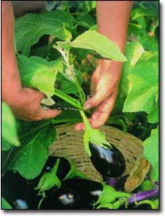

You can start harvesting new potatoes when they are golf-ball size. Without digging, gently brush the dirt back from the stems and pick out a few potatoes. Then, cover the stems again, and the plants will continue to set more potatoes.